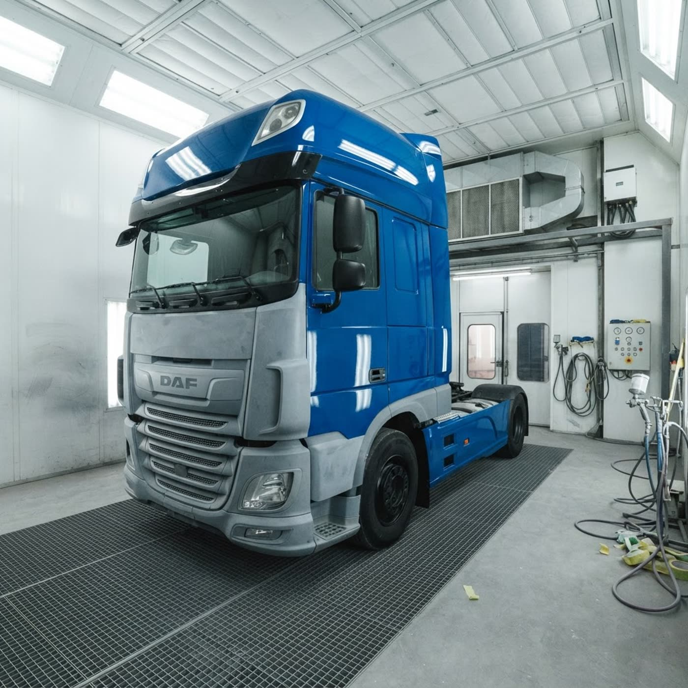

После ДТП — как с завода: кузовной ремонт тягачей и автобусов
Сварка любой сложности, замена кабин и кузовных элементов, окраска локально и целиком, восстановление геометрии. Работаем с DAF, MAN, Mercedes-Benz, Renault, Scania, Volvo.
Потяните ползунок: вмятина уходит, цвет возвращается
Так же, как на стенд-демо, мы ведём ремонт в цеху: от рихтовки до покраски. Выберите цвет — увидите результат в нём.
Полный цикл кузовного цеха
Сварочные работы
Любой сложности: рамы, кабины, кузовные элементы коммерческого транспорта.
Замена кабин и элементов
Кабины, крылья, панели кузовов микроавтобусов, автобусов и тягачей.
Окраска локально и целиком
Подбор по заводскому цвету, покраска отдельных панелей и полуприцепов.
Восстановление геометрии
Правка кузова после несерьёзных ДТП — кабина встаёт точно на место.
Ремонт рамки лобового
Приварка и правка рамки лобового стекла, герметичность — как у нового.
Антикоррозийная обработка
Защита кузовов и рам от коррозии — сезонная и восстановительная.
Цех в Фаниполе — от Минска 30 минут
Адрес: Фаниполь, Заводская ул., 29Жк5, Дзержинский район. Доезжайте сами или пригоняйте машину — назовём сроки после осмотра.
Что спрашивают владельцы
Какие машины вы берёте в ремонт?+
Чините ли после ДТП?+
Можно ли покрасить только одну панель?+
Сколько стоит ремонт?+
Пригоните машину — посчитаем ремонт
Позвоните или оставьте заявку: согласуем осмотр в цеху на Заводской, 29Жк5. По фото повреждений назовём предварительную вилку цены.